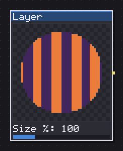
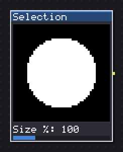
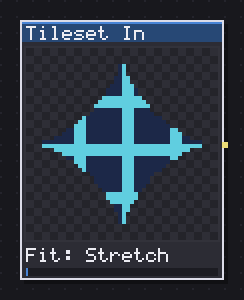
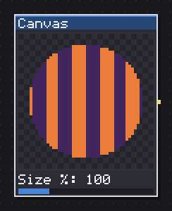
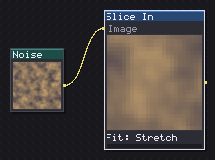

Aseprite is where a graph reaches into the document it is running inside: a layer, the active selection, a tileset, the flattened canvas, or a named slice, each one node away from becoming an input to everything else in Spaghetti. None of these five compute anything on their own, they read something that already exists in the sprite and hand it over as an image.
Four of the five, Layer, Selection, Canvas and Slice In, share the same placement controls, size, angle, offset, wrap, so a layer and the active selection line up on the canvas exactly the same way when one needs to mask the other.

Brings one sprite layer in, with its transparency, scale, rotation and offset.
Layer brings one sprite layer into the graph, with its own transparency intact. Layer picks which one from a list built off the document, and Frame (0=active) reads a specific frame instead of whatever frame is active in the editor, 0 meaning follow the timeline.
Size %, Angle, Offset X % and Offset Y % place the layer's content on the node's canvas the way a Transform would, which matters because a layer is not necessarily the same size as the graph's own canvas: these let a small layer sit centred, offset, or scaled up to fill the frame before it feeds into a filter chain. Wrap (tile) repeats the layer's content at the edges when it is smaller than the canvas, off by default, so a layer that does not fill the frame leaves the rest transparent instead.
This is the node that lets Spaghetti operate on hand painted art instead of only on generated textures: paint a base layer by hand, bring it in with Layer, and run it through Shade, Outline or any generator-facing node exactly as if it had come out of a noise node.
In: nothing · Out: image
Parameters

Brings the active selection in as a mask: white inside, black outside.
Selection brings the active selection into the graph as a mask: white inside the selected area, black outside it, placed exactly where a Layer node would place a same-sized sprite. It has no image input, since it reads the document's own selection state directly.
Size %, Angle, Offset X % and Offset Y % work the same as on Layer, for nudging or scaling the mask to line up with something else in the graph rather than only ever reading the selection at 1:1. Wrap (tile) repeats it at the edges, and Invert flips white and black, for when a shape is easier to select as the area to exclude rather than the area to keep.
I use this to carry a hand made selection, drawn once with the lasso or the magic wand, into the graph as a mask input for Blend's Opacity or for any node with a mask slot, rather than trying to reproduce that same shape with a generator. It answers something everywhere, even past the sprite's own rectangle, filled to black there, so it always gives a usable mask regardless of canvas size.
In: nothing · Out: image
Parameters

Brings a sprite tileset in as a sheet, or a single tile.
Tileset In brings a sprite's own tileset into the graph, as the whole sheet or as one tile picked out of it. Tileset picks which tileset from the document's list, and Tile (0=sheet) selects a single cell by index, 0 for the entire sheet at once.
Fit decides how that cell or sheet lands on the node's canvas when the sizes do not match exactly: Stretch resizes to fill, Tile repeats it at 1:1 scale, and Center places it at 1:1 in the middle with the rest left transparent. Center is usually the right choice for a single tile meant to be edited and written back, since it keeps the source pixels exact rather than resampled.
This is the way to pull an existing tilemap's tileset back into a procedural graph, run a filter or a recolour over every tile at once, and either preview the result or export it back into the document. Pair it with an atlas-style cell index downstream if the graph needs to treat the sheet as a grid of variants rather than as one flat image.
In: nothing · Out: image
Parameters

Brings every visible layer of one sprite frame in, flattened.
Canvas brings every visible layer of one sprite frame into the graph, flattened into a single image, the whole picture rather than one layer of it. Frame (0=active) reads a specific frame or follows the active one in the timeline.
Size %, Angle, Offset X % and Offset Y % place the flattened result on the node's own canvas, and Wrap (tile) repeats it at the edges if it is smaller, the same placement controls Layer and Selection share. This is the node to reach for when a graph needs to react to the whole composed drawing rather than to one layer of it, running an effect over a finished piece of pixel art, or feeding a hand drawn sprite into Shade, Outline or Pixel Bevel for a finishing pass that a single layer alone would not carry enough information for.
Since it reads the document exactly as it currently renders, any change to a hidden layer's visibility or to the layer stack shows up here right away, which makes this the right input whenever the graph is meant to track what the sprite actually looks like rather than one specific ingredient of it.
In: nothing · Out: image
Parameters

Crops the rectangle of a sprite slice, or one you type.
Slice In crops the rectangle of a named sprite slice, or one typed in by hand, out of a wired image, or out of the sprite's own canvas when nothing is wired to the image input at all. Slice picks a slice from the document's list; with none picked, X (no slice), Y (no slice), W (0=rest) and H (0=rest) set the rectangle directly, with the two size fields at 0 meaning stretch to whatever is left of the source.
Fit works exactly as on Tileset In: Stretch, Tile or Center the cropped rectangle onto the node's own canvas. This is the way to pull one panel out of a sprite sheet, one icon out of a UI atlas, or one frame out of a strip that was never split into separate layers, without leaving the graph.
It is also what Nine Slice reads its margins from when a Margins from slice value is set on that node: a slice with a defined centre box, Aseprite's own 9-slice tool, carries those margins along automatically, so Slice In and Nine Slice together turn a hand-marked panel into a node graph that respects the same margins the artist already drew.
In: Image (image) · Out: image
Parameters